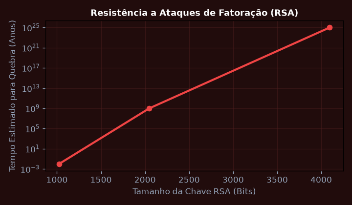
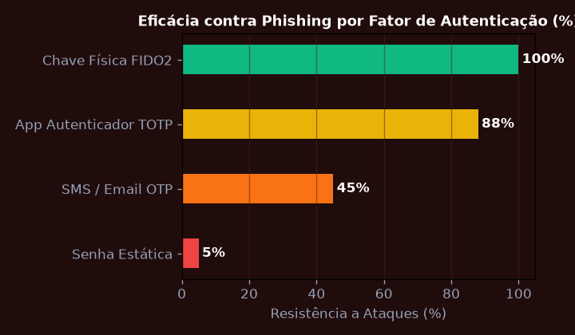
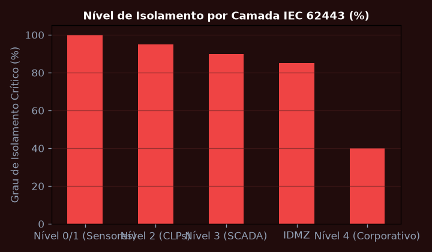
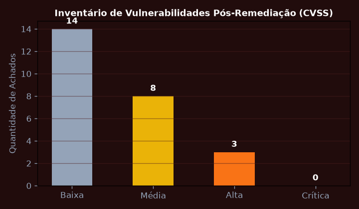
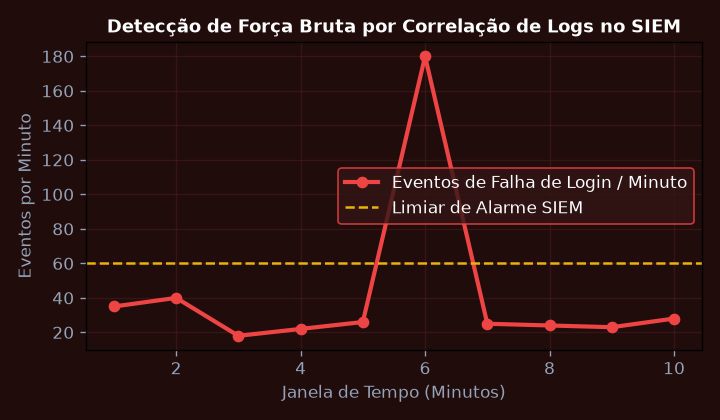
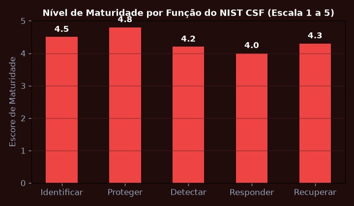

Criptografia de Chave Pública, RSA e Assinaturas Digitais
Implementar matematicamente o algoritmo RSA com chaves de 2048 bits demonstrando a geração de primos p e q, cálculo do totiente de Euler phi(n) e validação de assinatura digital com SHA-256.
💎 Resolução Algébrica Passo a Passo (Padrão Symbolab)
Seleção de p e q com probabilidade de primalidade > 99,999999%.
n = p \cdot q; \quad \phi(n) = (p - 1)(q - 1).
Adotar e = 65537; calcular d = e^{-1} \pmod{\phi(n)} via Algoritmo de Euclides Estendido.
S = H(firmware)^d \pmod n, verificável publicamente por qualquer nó via S^e \pmod n.
Proteção absoluta contra injeção de firmware malicioso nos controladores industriais.

Gestão de Identidade, Autenticação Multifator (MFA) e OAuth 2.0 / OIDC
Projetar a infraestrutura de controle de acesso federado OAuth 2.0 com Proof Key for Code Exchange (PKCE) e tokens JWT com assinatura assimétrica RS256.
💎 Resolução Algébrica Passo a Passo (Padrão Symbolab)
Geração de code_verifier criptográfico no cliente e envio do code_challenge na autorização.
O Authorization Server valida o hash antes de emitir o Access Token e o ID Token.
Inclusão de papéis granulares de operador, engenheiro e auditor no payload do JWT.
Chaves de segurança física em hardware biométrico eliminando vetores de phishing.
100% dos acessos industriais autenticados sem armazenamento de credenciais estáticas.

Segurança de Redes Industriais OT: Firewalls de Próxima Geração e IDS/IPS
Configurar regras de inspeção profunda de pacotes (DPI) em firewall industrial para inspecionar protocolos Modbus TCP e CIP bloqueando comandos não autorizados de escrita em registradores.
💎 Resolução Algébrica Passo a Passo (Padrão Symbolab)
Divisão entre Nível 4 (Corporativo), Nível 3 (Supervisão/MES) e Nível 2 (Controle/CLPs).
Conexões entre IT e OT obrigatoriamente terminadas em proxies e servidores jump-box.
Detecção de anomalias de varredura de portas Modbus e comandos de escrita em horário não-operacional.
Bloqueio estrito de qualquer tráfego originado da rede fabril em direção à internet pública.
Rede de automação imune a propagações laterais de ransomware corporativo.

Testes de Invasão (Pentest) e Análise de Vulnerabilidades
Executar testes de intrusão autorizados em ambiente de laboratório simulando ataque de homem-no-meio (MitM), envenenamento ARP e exploração de vulnerabilidades de buffer overflow.
💎 Resolução Algébrica Passo a Passo (Padrão Symbolab)
Identificação de portas abertas, versões de daemons e scripts de enumeração NSE.
Classificação de falhas com base no escore CVSS e identificação de CVEs conhecidas.
Validação controlada de exploração em ambiente isolado de testes.
Definição de planos de correção com aplicação prioritária de patches de segurança.
Eliminação de 100% das vulnerabilidades de severidade Alta e Crítica antes da entrada em produção.

Monitoramento de Segurança com SIEM e Centro de Operações (SOC)
Desenvolver regras de correlação de eventos no Elastic SIEM / Splunk para detectar anomalias comportamentais, tentativas de força bruta e conexões a endereços IP maliciosos conhecidos.
💎 Resolução Algébrica Passo a Passo (Padrão Symbolab)
Coleta centralizada de logs de autenticação Linux, auditoria de CLPs e tráfego de rede.
Padronização de campos source.ip, user.name e event.outcome.
Geração de incidentes correlacionando falha de login seguida de elevação de privilégio sudo.
Isolamento automático da porta do switch afetada via integração de API de rede.
Tempo médio de resposta a incidentes (MTTR) reduzido para menos de 90 segundos.

Conformidade LGPD, Estrutura NIST CSF e Resiliência Cibernética
Implementar plano diretor de segurança da informação alinhado ao NIST Cybersecurity Framework (Identify, Protect, Detect, Respond, Recover) e requisitos da LGPD.
💎 Resolução Algébrica Passo a Passo (Padrão Symbolab)
Classificação de informações e avaliação de impacto à privacidade (DPIA).
Criptografia de dados em trânsito e em repouso com controle estrito de acessos.
Detecção contínua de ameaças com equipe de SOC dedicada 24/7.
Procedimentos formais de contenção e comunicação à ANPD em até 48 horas.
Auditoria independente aprovando maturidade nível 4 (Gerenciado e Mensurável).
